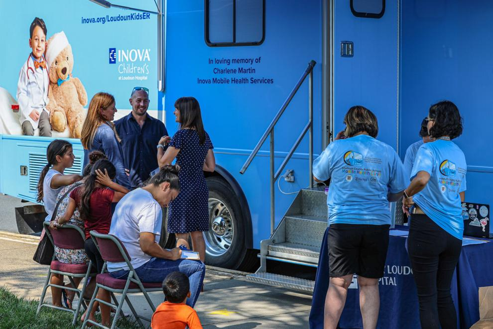
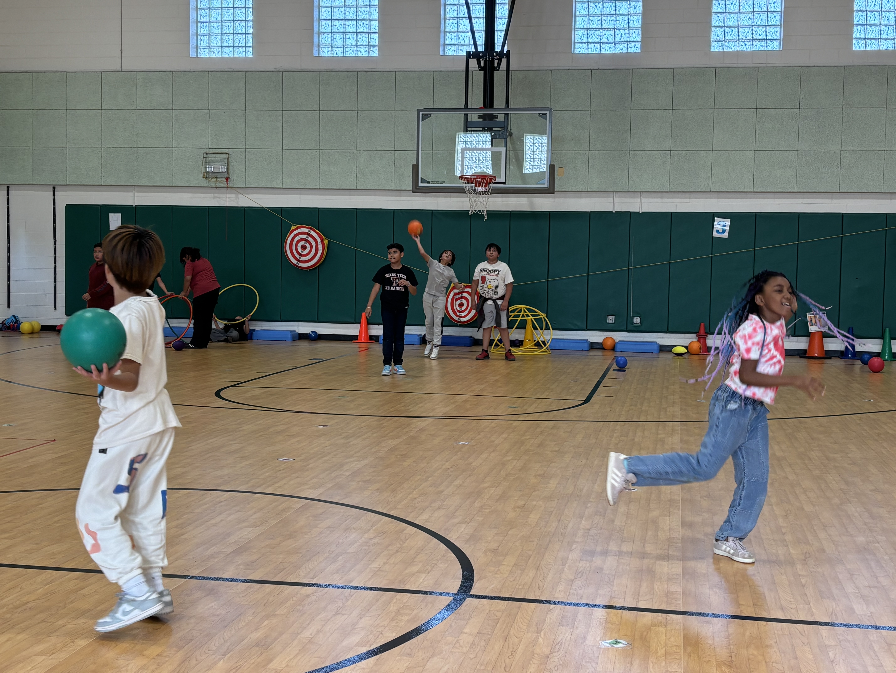
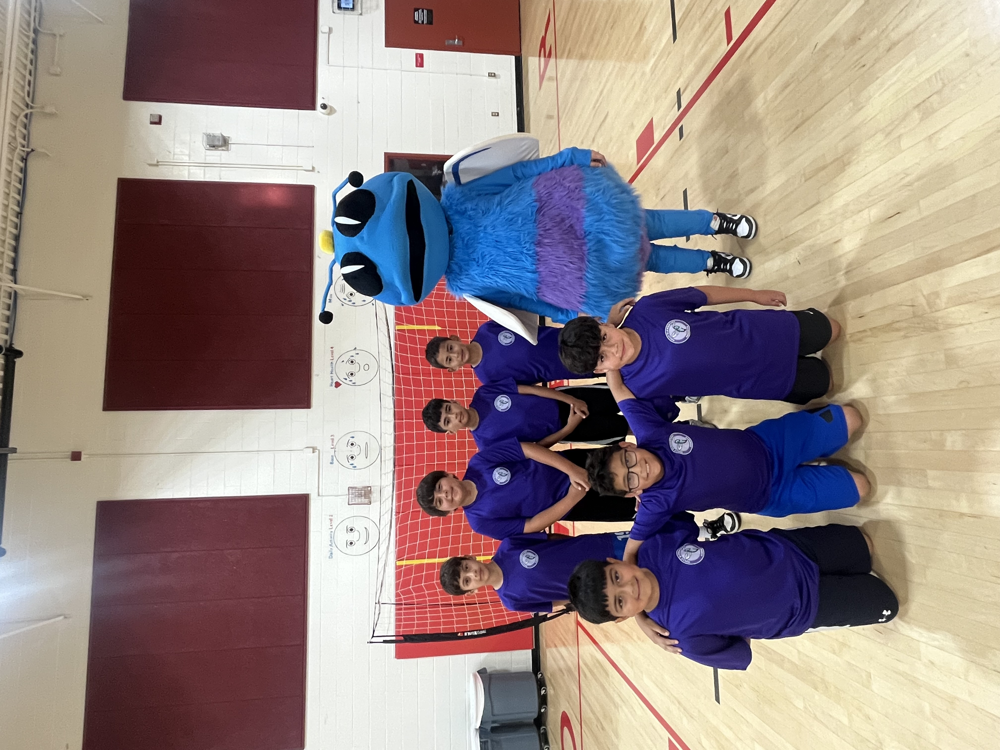

Branch: Basic Needs | Treatment: School-Level | Cohort 1
Loudoun County Schools realized that many families at Guilford Elementary and Sully Elementary did not have an established healthcare provider, a wellness gap with real implications for how prepared students were for school. As part of their community schools work, the division launched a mobile health clinic at school sites to provide families with physicals, wellness checks, and connections to primary care. A dedicated coordinator runs the work across both buildings, which also provides access to clothing closets, school supply programs, and weekend meal bags for students and their families.
Programming at each school reflects the students it serves. The Inter-School Futsal League at Sully uses indoor soccer as an attendance incentive across four elementary schools, partnering with Deportivo Sterling, a Spanish-language soccer club. At Guilford, the Green Beans Club gives students a school garden. Loudoun County has already recognized the impact of this community schools work, recently moving the mobile health clinic into the division's general operating budget, ensuring it continues to serve the community beyond the current grant.

The Loudoun Mobile Health Clinic rotates between Guilford and Sully so that families at each building have regular access to primary care, removing scheduling and transportation barriers for families in the school community. The full-size Inova Health Services bus operates with a five-person clinical team and a fully equipped exam room.

The Inter-School Futsal League runs across four elementary schools as an attendance incentive. It is made possibly through a community partnership with Deportivo Sterling, a local Spanish-language soccer club that serves as a cultural partner for families from soccer-playing communities. The league includes a championship game and celebratory ceremony at the end of the season.


The Green Beans Club gives Guilford students a school garden where they grow, harvest, and eat their own food. The club meets regularly during the school year, and the garden beds sit alongside the school building where students can check on their plants between classes. Guilford also runs a Sports Club in the gym with basketball, running, and hula hoops — unstructured physical activity with a coach present, giving students time to move and connect with each other.


Sully's futsal team competes in the Inter-School Futsal League, and the team has its own identity with matching blue jerseys and the school mascot. Programming extends beyond indoor sports to outdoor activities with coaching support on the school's track. Sully's PTO grew from 4 to 16 members this year. Students also have the opportunity to join Sully's Student Council, giving them a role in school decision-making.